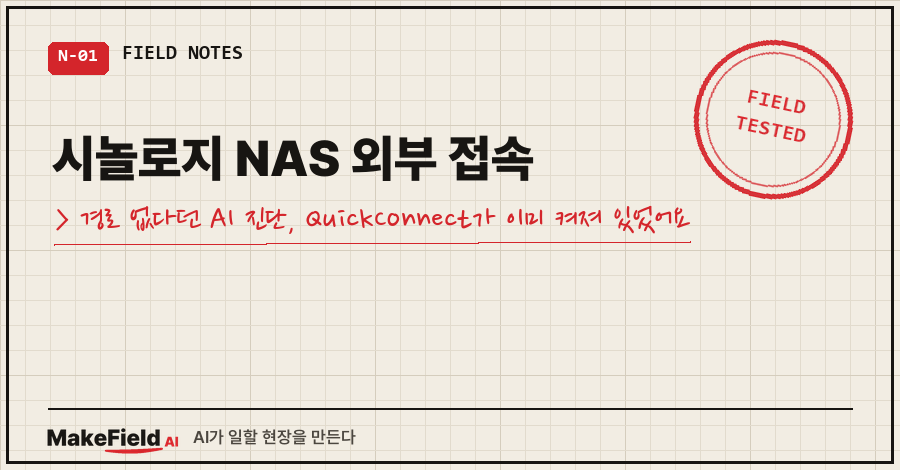
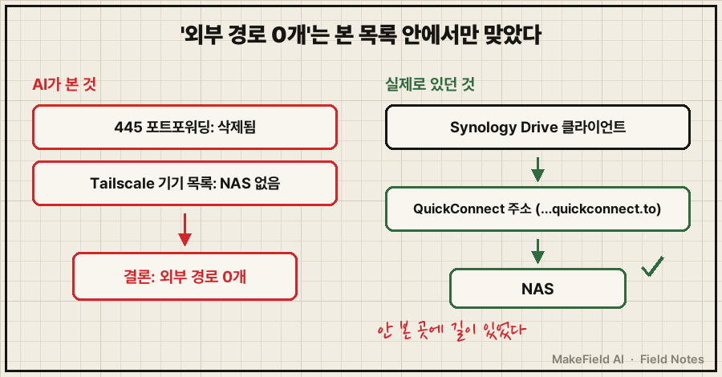
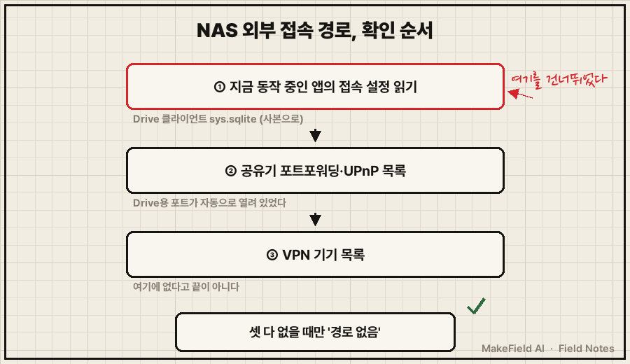

시놀로지 NAS 외부 접속 경로가 "하나도 없다"는 진단을 받았다면, 새 프로그램을 깔기 전에 지금 쓰고 있는 동기화 앱의 접속 설정부터 열어 보세요.
제 경우엔 AI가 "외부에서 들어갈 길이 0개니 원격 접속 도구부터 깔자"고 했는데, 동기화 앱 설정 파일 안에 QuickConnect 주소가 이미 들어 있었어요.
핵심만 한 줄로: 시놀로지 QuickConnect는 포트포워딩이나 공유기 설정 없이 PC·모바일 앱을 NAS에 연결해 주는 기능이고(Synology DSM 7.4 공식 사양), Synology Drive를 QuickConnect로 연결해 쓰고 있다면 외부 접속 경로는 이미 하나 열려 있는 상태입니다.
제 본업은 제조 현장 자동화·제어 쪽이에요. 집에서는 AI한테 시켜서 개인 자동화를 이것저것 굴리고요.
2026년 9월, 그 자동화 하나를 만들다가 AI랑 같이 헛다리를 짚은 얘기입니다.
1. 태블릿 공부 자료를 NAS로 보내려다 생긴 일
만들던 건 단순했어요.
매일 새벽에 공부할 PDF를 몇 개 골라서,
태블릿에서 열어 볼 수 있는 폴더에 떨궈 주는 스크립트.
처음엔 AI가 클라우드 드라이브(OneDrive)를 권했어요.
그런데 집에 시놀로지 NAS가 있잖아요. 그래서 한마디 했죠.
시놀로지 나스 쓰면 되지여기서 AI가 진단을 하나 내놨습니다.
VPN 툴(Tailscale)에 등록된 기기 목록에 NAS가 없다,
게다가 며칠 전에 공유기에서 NAS 파일공유 포트(445) 포워딩도 지웠다,
그러니 "외부 경로 0개, NAS에 Tailscale부터 설치해야 한다."
듣고 보면 그럴듯하죠. 근거도 두 개나 있고요.
그대로 갔으면 NAS에 프로그램 하나를 더 깔고, 관리할 것도 하나 더 늘었을 거예요.
2. 왜 그 진단이 틀렸나요
AI가 확인한 건 '자기가 아는 경로 목록' 두 개뿐이었고, 실제로 매일 돌고 있던 동기화 앱의 접속 방식은 보지 않았어요.
445 포트 포워딩을 지운 건 사실이에요. 파일공유 포트가 인터넷에 열려 있는 건 랜섬웨어가 주로 들어오는 길이라서, 공유기 정리하면서 일부러 닫았거든요. 그 정리 과정은 포트포워딩 삭제 전 확인 3가지 글에 따로 적어 뒀어요.
그런데 빠진 게 하나 있었어요.
제 작업 폴더는 매일 Synology Drive로 NAS랑 동기화되고 있었거든요.
그 앱이 NAS에 어떤 주소로 붙는지는 아무도 안 봤던 거예요.
그래서 Synology Drive 클라이언트가 접속 정보를 저장해 두는 파일을 들여다봤어요. 윈도우에서는 여기 있었습니다(제 PC 기준, Drive 클라이언트 3.5).
%LOCALAPPDATA%\SynologyDrive\data\db\sys.sqlite안의 connection_table이라는 표를 읽어 보니 이랬어요. 값은 가렸습니다.
server_name = (QuickConnect ID)
server_ip = 192.168.x.x
server_port = 6690
use_ssl = 1
domain_name = (IP).(QuickConnect ID).direct.quickconnect.toquickconnect.to로 끝나는 주소가 그대로 들어 있었어요.
QuickConnect가 이미 켜져 있었고, 동기화 앱은 그걸로 붙고 있었던 거죠..
Tailscale 추가 설치는 필요 없었습니다.

3. NAS 외부 접속, 고를 수 있던 방법은 네 가지였어요
결론부터: 저는 이미 켜져 있던 QuickConnect를 쓰고, 클라우드 드라이브는 예비로 남겼어요. 고려했던 방법을 표로 정리하면 이렇습니다.
| 방법 | 장점 | 걸린 점 | 결정 |
|---|---|---|---|
| 445 포트포워딩 되살리기 | 설정이 단순 | 파일공유 포트가 인터넷에 노출(랜섬웨어 주 경로) | 안 함 |
| NAS에 Tailscale 설치 | 내 기기끼리만 통하는 길 | 설치·관리할 게 하나 늘어남 | 필요 없어짐 |
| QuickConnect | 포트포워딩 없이 연결(공식 설명) | 직접 연결이 안 되면 릴레이로 돌아 느릴 수 있음 | 채택(이미 켜져 있었음) |
| 클라우드 드라이브 | NAS가 꺼져도 동작 | 파일이 외부 서버로 나감 | 예비 경로로 코드에 남김 |
QuickConnect에도 단점은 있어요. 시놀로지 공식 사양에 "릴레이로 연결된 QuickConnect는 포트포워딩 연결보다 느릴 수 있다"고 적혀 있어요. 저는 하루 몇 개 PDF만 옮기니까 상관이 없었고요. 큰 영상 파일을 자주 옮긴다면 판단이 달라질 수 있습니다.
그리고 NAS가 꺼져 있는 날을 위해, 스크립트에는 NAS 경로가 안 보이면 클라우드 드라이브 폴더로 자동 전환하는 줄을 남겨 뒀어요. 길을 하나로만 두지 않으려고요.
이렇게 만든 배급 스크립트는 9월 20·21·22일 사흘 연속 무인으로 정상 실행됐습니다.
4. 시놀로지 NAS 외부 접속 경로, 이 순서로 확인해요
이번 일로 순서를 바꿨어요. "경로가 없다"는 결론은 맨 마지막에 내립니다.

- 지금 실제로 동작 중인 앱의 접속 설정부터 봅니다. 동기화가 되고 있다면 어딘가 길이 있는 거예요.
- 공유기 관리 화면의 포트포워딩·UPnP 목록을 봅니다. 제 공유기 UPnP 목록에는 Drive용 6690 포트가 자동으로 열려 있었어요. 시놀로지 공식 사양에도 "UPnP를 지원하는 공유기에는 필요한 포트포워딩 규칙을 자동으로 적용한다"고 나와 있고요.
- 마지막으로 VPN 기기 목록을 봅니다.
NAS 쪽에서 직접 보고 싶다면 DSM의 제어판 > 외부 액세스 > QuickConnect 메뉴에서 켜짐 여부와 릴레이 옵션을 확인할 수 있어요(시놀로지 도움말 기준, 저는 이번엔 클라이언트 쪽에서 확인했습니다).
이런 질문이 나올 것 같아요
Q. sys.sqlite 파일을 그냥 열어도 되나요?
동기화 앱이 쓰고 있는 파일이라, 저는 복사본을 만들어서 그 사본을 읽었어요. 원본을 직접 열어 고치면 동기화 설정이 꼬일 수 있습니다. 안에 로그인 세션 값도 들어 있으니 화면 캡처나 공유할 때는 꼭 가리세요.
Q. QuickConnect가 켜져 있으면 보안상 위험한 거 아닌가요?
시놀로지 공식 사양은 "SSL을 켜면 종단 간 암호화를 쓴다"고 설명해요. 제 설정 파일에도 use_ssl = 1이 찍혀 있었고요. 다만 어떤 외부 경로든 열려 있는 길이니, NAS 계정 비밀번호와 2단계 인증은 따로 챙기는 게 맞습니다.
AI 진단이 틀린 건 게을러서가 아니었어요. 손에 든 목록 두 개로는 맞는 결론이었거든요. 문제는 그 목록 밖을 안 봤다는 거예요. 그래서 작업 기록에 "경로가 없다고 단정하기 전에 클라이언트 설정 파일부터 읽어라"는 줄을 남겼어요.
여러분 NAS는 지금 어떤 길로 바깥이랑 연결돼 있는지, 한 번 확인해 보셨나요?
집 장비에 AI를 붙여 보다 헛다리 짚은 기록은 makefield.ai에서도 이어 보실 수 있어요.
출처
- Synology, DSM 7.4 Network and External Access 사양(QuickConnect: 포트포워딩·공유기 설정 불필요, UPnP 공유기 자동 포트포워딩, 릴레이 연결은 지연으로 느릴 수 있음, SSL 사용 시 종단 간 암호화) → https://www.synology.com/en-global/dsm/7.4/software_spec/network_external_access (2026-10-17 확인)
- Synology 지식센터, QuickConnect 도움말(제어판 > 외부 액세스 > QuickConnect, 릴레이 서비스 옵션) → https://kb.synology.com/en-global/DSM/help/DSM/AdminCenter/connection_quickconnect
- 증상·실측값: 2026-09-19~22 개인 태블릿 공부 자료 배급 스크립트 구축 기록 + 2026-10-17 본인 PC 설정 파일 재확인(QuickConnect ID·IP·계정명 제외)
태그: #시놀로지NAS외부접속 #시놀로지QuickConnect #퀵커넥트 #NAS원격접속 #NAS외부접속방법 #SynologyDrive #시놀로지드라이브 #NAS포트포워딩 #테일스케일 #Tailscale #홈NAS #집NAS활용 #AI진단오류 #AI오답노트 #MakeFieldAI